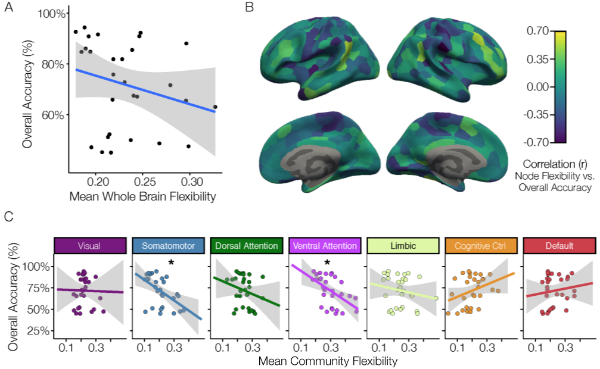
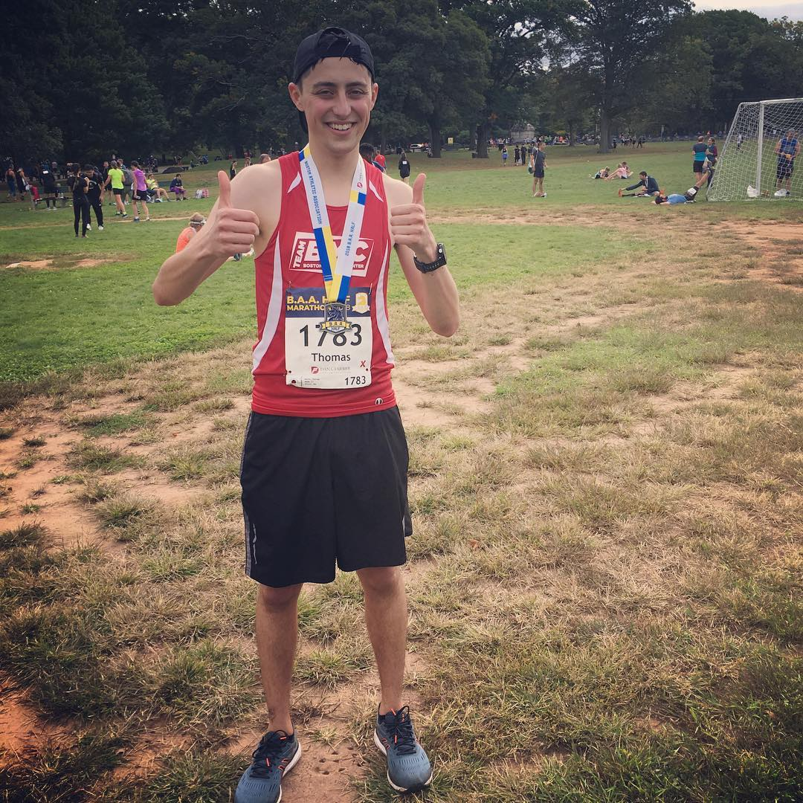
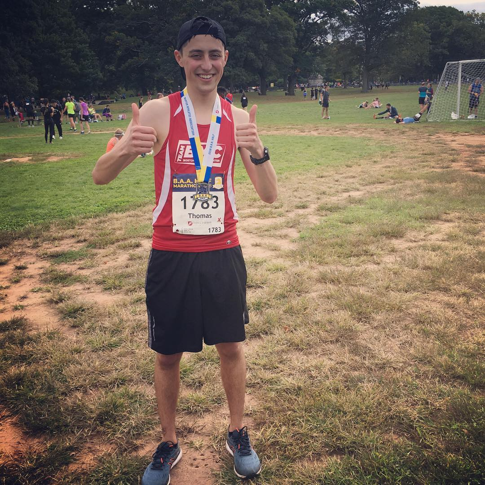

Check out new work from our lab - online now! Dynamic Network Analysis
Demonstrates the Formation of Stable Functional Networks During Rule Learning. Three years ago, this was just a side project, and now it is my first first-author paper!

When some prospective students came to visit the lab, we put together a fun demo: scanning a pineapple!
In February of 2019,
Data for Progress launched a prediction competition that
"finally gives data dorks everywhere the chance to show their
Charisma, Uniqueness, Nerve, and T...tests." Here is my attempt at
implementing an algorithm to predict the weekly winner and loser of RuPaul's Drag Race Season 11.
 

On October 8th, I ran the B.A.A. Half Marathon in support of Boston Medical Center (BMC). This was my third marathon, but my first time running for a cause!

Back in June, I added my name to the list of LGBTQ+ people working in STEM. Here I talk
a little bit about 500QS and other organizations for LGBTQ+ people working in STEM.

Recently, a few people have been asking how I made my website, so I decided to write a quick how-to guide. I've also included links to some of my favorite personal sites that others have created.